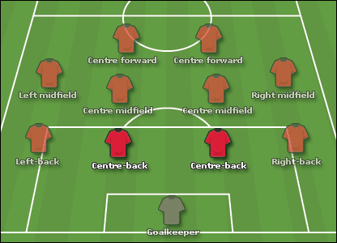

Who is a Center Back?
Center backs are the heart of the defense. Their primary job is to stop opposing attackers and protect the goal.
Main Responsibilities
Mark strikers
Win aerial duels
Block shots
Intercept passes
Build play from the back
How to Play the Position?
Stay compact with your defensive partner, anticipate danger, and avoid diving into challenges unnecessarily. Good center backs read the game and position themselves before problems arise.
Key Attributes
Strength
Tackling
Positioning
Heading
Composure

Wing Back (LWB/RWB)
Who is a Wing Back?
Wing backs operate in systems with three center backs. They are expected to contribute heavily in both attack and defense.
Main Responsibilities
Provide width
Create chances with crosses
Defend wide areas
Support midfield
Press opponents
How to Play the Position ?
Constant movement is required. You must have the stamina to attack one moment and defend the next.